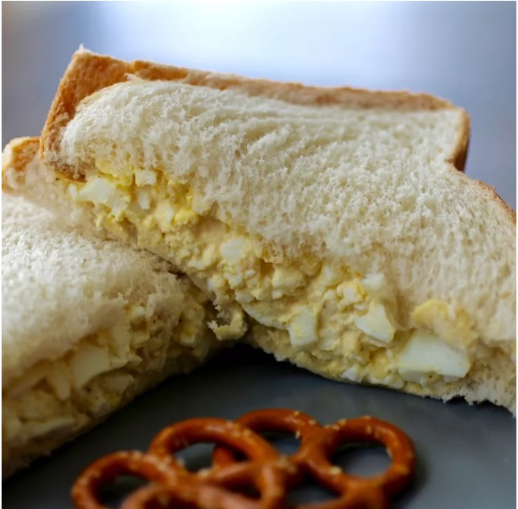

Egg Salad for Sandwiches

Description
Make deli-worthy egg salad sandwiches at home with this top-rated egg salad recipe! You'll come back to it again and again.
Ingredients
- 8 eggs
- 1/2 cup mayonnaise
- 1/4 cup chopped green onion
- 1 teaspoon prepared yellow mustard
- 1/4 teaspoon paprika
- salt and pepper to taste
Steps
- Place eggs in a saucepan and cover with cold water. Bring water to a boil and immediately remove from heat. Cover and let eggs stand in hot water for 10 to 12 minutes. Remove from hot water, cool, peel, and chop.
- Place chopped eggs in a bowl; stir in mayonnaise, green onion, and mustard. Season with paprika, salt, and pepper. Stir and serve on your favorite bread or crackers.